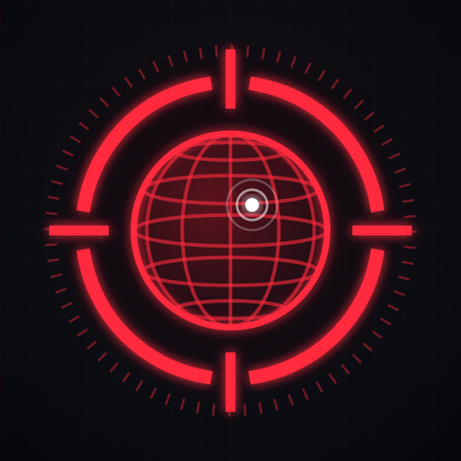

Command centre · Kent HQ
Build Hub
Put Build Hub on your home screen with its own icon. After that, tapping the icon opens the hub straight away.
iOS Add to Home Screen
- Open this page in Safari.
- Tap Share (the square with the arrow), then Add to Home Screen.
- Keep the name Build Hub.
- If you see Open as Web App, switch it off. That way it opens in Safari, where you're already signed in to Claude.
- Tap Add.
If you leave "Open as Web App" on, you'll have to sign in to Claude once inside the app.
Android Add to Home screen
- Open this page in Chrome.
- Tap the ⋮ menu, then Add to Home screen (or Install).
- Keep the name Build Hub and tap Add.
macOS Add to Dock
- In Safari: File → Add to Dock. In Chrome: ⋮ → Cast, save and share → Create shortcut.
- Keep the name Build Hub.